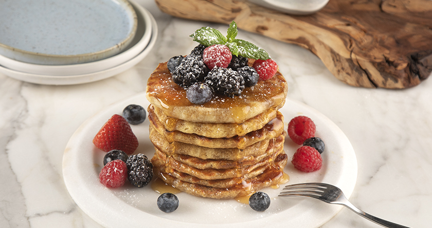

Pancakes in the toaster
If you're looking for the perfect sweet recipe for Sunday brunch, make pancakes in the toaster oven. Easy, quick and without using a pan.
ShowIf you're looking for the perfect sweet recipe for Sunday brunch, make pancakes in the toaster oven. Easy, quick and without using a pan.
ShowThe traditional soup that we eat on Holy Saturday night after the Resurrection, made with lamb offal, vegetables and herbs. After the Lenten fast, it is the first dish containing meat and is eaten to prepare the stomach for the next day.
Show